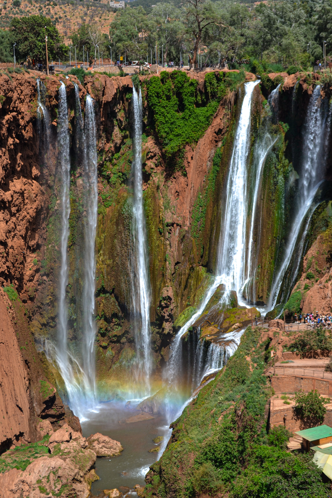
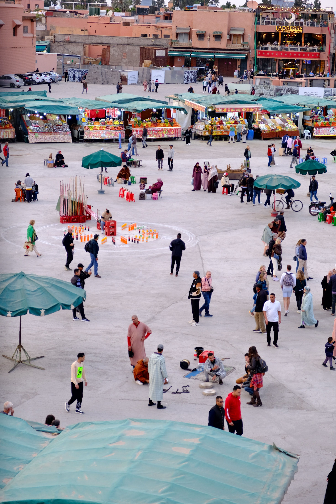

Where to?
Explore Morocco
Every region has its own character. Here are a few places we love — but we can plan your trip anywhere in Morocco.

…and anywhere else in Morocco you want to go.
Most guides send you from Marrakech straight to the dunes — and skip everything in between. We build custom Morocco trips around your dates, budget and interests: cities, mountains, villages and coast.
Every region has its own character. Here are a few places we love — but we can plan your trip anywhere in Morocco.
…and anywhere else in Morocco you want to go.
Your dates, budget & interests
Real local knowledge + careful planning
A full PDF: itinerary, budget, tips
"We plan your trip before you travel — you book and travel independently. Your first sample plan is free."

Rooted in a small village in the Atlas Mountains, Kasbah Trails was born from a simple belief: the best trips are the ones you don't find in standard guidebooks.
As a local, I plan trips the way I would for a friend visiting me — with honest budgets, real local knowledge, and no filler.
I do the planning. You book, and you travel on your own terms.
This is just one example route. Every region of Morocco has its own character — your plan is built around the places you choose.
Nature, photography, culture – relaxed pace
Mid-range (~700€ / person, excl. flights)
2 people, solo-friendly route
March–May or September–November

No hidden fees, no inflated prices – here's what a trip like this actually costs per person.
| Category | Estimated Cost |
|---|---|
| Accommodation (4 nights: riad + guesthouse) | €140 – €180 |
| Local transport & driver (Atlas days) | €90 – €120 |
| Meals (mix of local & mid-range) | €80 – €110 |
| Activities & guide fees | €40 – €60 |
| Shopping & extras (flexible) | €50+ |
| Estimated total per person | ≈ €420 – €520 |
Casual is fine, but shoulders/knees covered is respectful in the medina and villages.
Morocco is generally welcoming to travelers; stick to agreed prices and trusted guides.
Cash (dirhams) is essential outside big hotels – many riads and mountain guesthouses don't take cards.
A local SIM card (~5€) covers you almost everywhere, including most mountain villages.
| English | Darija |
|---|---|
| Hello | Salam |
| Thank you | Shukran |
| How much? | Bshhal? |
| No, thank you | La, shukran |
Fill out a quick form and get your first sample plan for free.